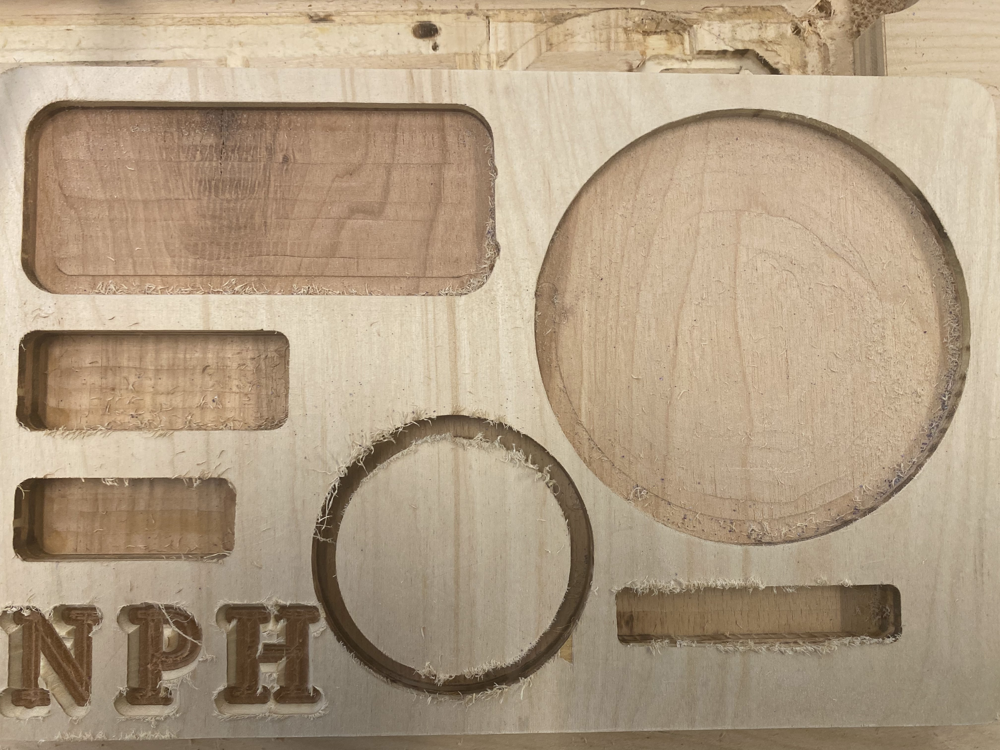
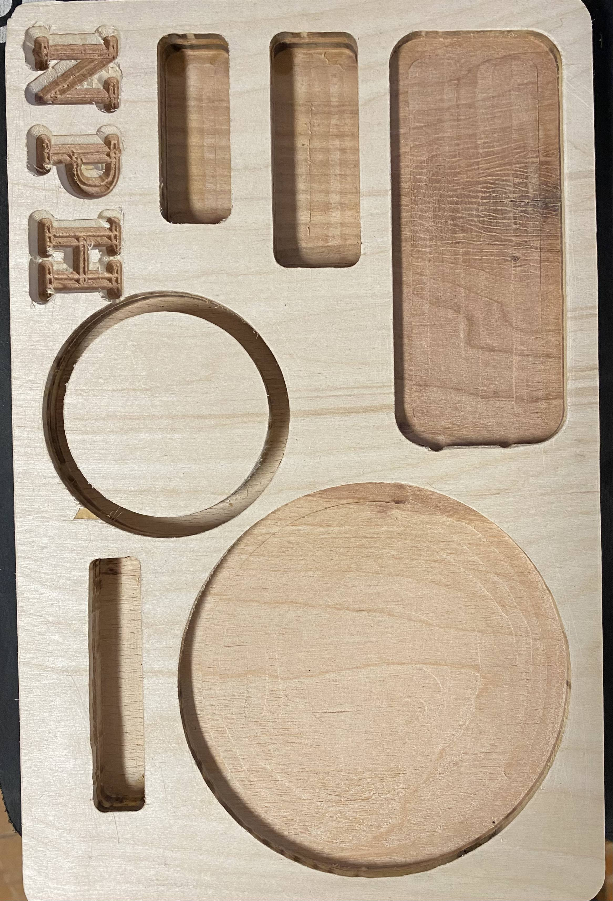
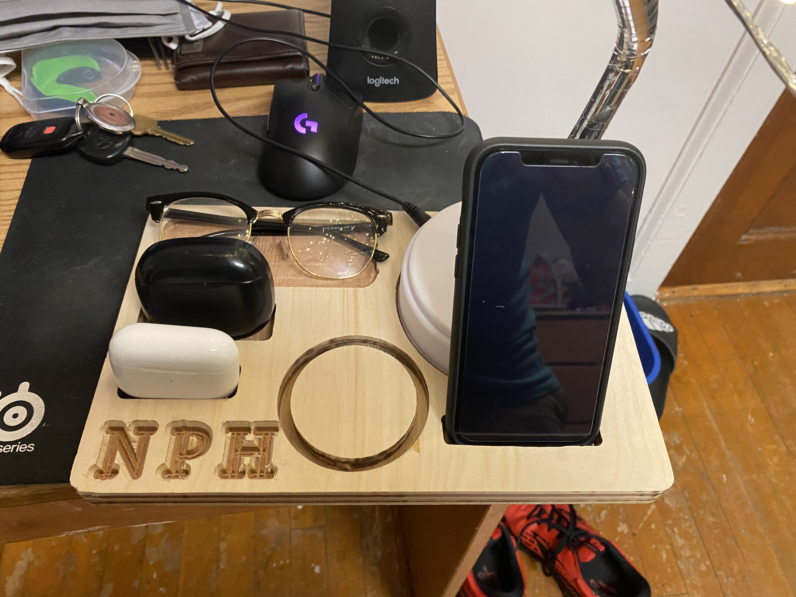
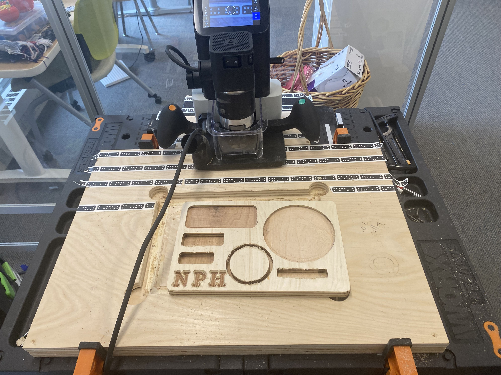

Intro
This week we where asked to use a CNC routing tool, called the shaper to create a desk organizer. The spacifications for this piece where that it should fit 3 of our items into it as well as having a 3 in space for our printed items later.
This being my final product.(pre sanding)
And post sanding.
Here is the deskorganizer with all of my items in it.
Using the shaper is not an overtly hard process, although there are alot of steps to remember and it is in the simplest terms a drill so there is a sharp spinning object that cuts into wood so it could also very well cut into yourself if used improperly. (though there are safety features all over the machine.)
The way to use this machine works is it takes a file from the user then using digital maping of the space, cuts where the user has indicated and thus makes their design. Though a large part of this process is that of picking what type of cut to use. There are maltiple different cuts like, on line, outline, inline and pocket. There is also the matter of changing the bit in the CNC machine, for our lab we only use two, one being the .25in mill bit which is used for most all cuts aside from lettering. which used the V bit.
To actualy use the Shaper we must start with saftey, we always use hearing and eye protection while using the shaper. As wells as the fact that we muct have certan attire when using the Shaper, no watches/bracelets, tie up long hair, and beware lose hanging clothes. After you have met these saftey requirements we can start talking about the actual shaper.
While the shaper is a smart machine it is not without flaw or failing, so some steps must be taken, like countersinking the screws that attach the your board to the shaper work space. As well as using double sided tape to stick your board down.
When being taught the shaper there was a long proces to using the shaper, starting with safety requirements and then moving to calling out that you will start using a loud maching, then starting the machine and vacumme. After this we must actualy use the controles of the machine, first we have to upload our design and anylize the space so the machine knows where it is this process works with the dotted tape that acts as an anchor for the design space. Then we must make sure we have the right bit in then set the Z height, then select our cut object and what type of cut we will be using. After this we place both of our hands on the shaper handles and lower the bit and begin cutting
